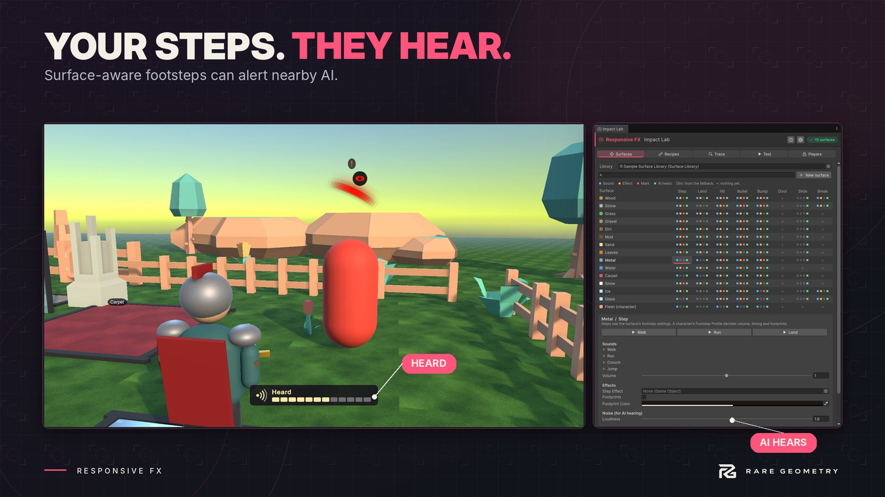
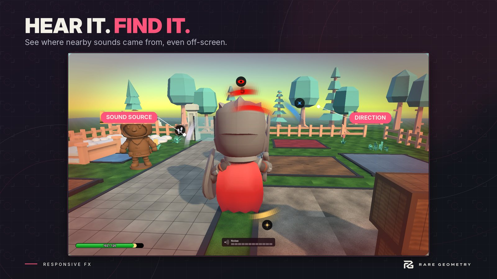

Noise and hearing
Every step and contact can make noise: a place and a radius. Noise is for your AI, not for the player's ears. It never follows the player's volume setting, so a player who turns footsteps down is still heard.
Let AI hear #


Add a Noise Listener to a guard. It hears a noise when the noise's radius reaches its ears.
- Hearing scales how far it hears: 2 hears twice as far.
- Hear steps, impacts, world choose what it listens to: footsteps and landings; hits, bullets and breaks; bumps, doors, sliding and rolling.
- Walls muffle makes a noise behind something solid carry less far.
- On Heard hands your AI the position. In code, the
Heardevent gives the whole noise: where, how far it carried, what kind, who made it, on which surface.
listener.Heard += (NoiseListener who, in NoiseEvent noise) => agent.SetDestination(noise.Position);
How loud something is comes from three places multiplied together: the surface (gravel is loud, grass is soft), the row's Loudness, and how hard the contact was. Footwear and weather change it too: soft soles carry less far, snow swallows sound.
Your own noise #
GameplayNoise.Emit(new NoiseEvent { Position = transform.position, Radius = 18f, Kind = ContactKind.Custom, Source = gameObject });
GameplayNoise.Masking (0 to 1) shrinks every noise while something loud covers it: rain, machinery, a crowd.
GameplayNoise.Made is raised for every noise.
Rooms and doors #
Without rooms, sound travels in a straight line. With them, it goes through openings:
- Add a Sound Room to a box (or several) that covers a room.
- Add a Sound Portal in each doorway or window. It finds the room on each side by itself.
- Set the portal's Open value from your door script: 0 shut, 1 wide open. A shut door lets a little through.
Noise then reaches a listener by the shortest way through open portals, losing strength at each shut one, and the sounds the player hears from another room are quieter and duller. A noise in a sealed room stays in it.
Trails #
Characters leave a trail of where they stepped. A Trail Follower on an AI spots a fresh track within its Spot Radius and walks it, newest last: it raises On Track Found, then On Next Point for each point to walk to (wire it to your NavMeshAgent), and On Trail Ended when it caught up or the rest went cold.
In code: Trails.FindFreshest(position, radius, out var point) and Trails.Next(point, out var next).
Show the player #


- The Noise Meter shows how much noise the player is making and changes the moment someone hears it.
- The Sound Ring marks where a listener who just heard the player stands.
Both are on Player options and screens.
See it #
Impact Lab's Trace tab, with Show in Scene view on, draws each noise as a ring where it landed, as far as it carried, and a line to each listener that heard it.